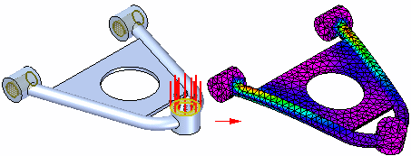
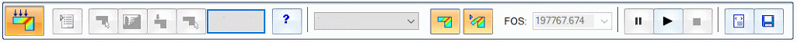
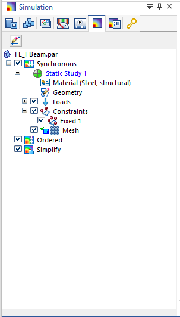
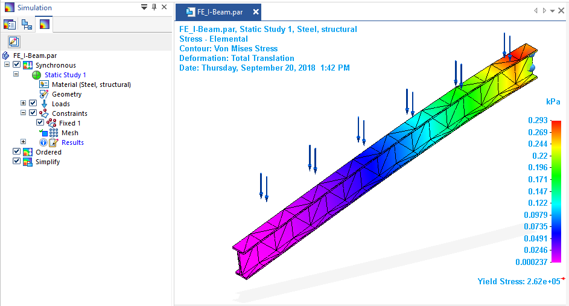

Simulation Express command
In Solid Edge 2023, the Tools tab→Environs group→Simulation Express command is still available on the ribbon, but you cannot use it to create new studies, only to review the results of previously created Simulation Express studies. Instead, you can use equivalent capabilities in Solid Edge Simulation to perform the first-pass analysis of the effects of stress, displacement, and vibration on a part.
When you select the Simulation Express command, you are prompted to migrate your existing study to Solid Edge Simulation or to create a new study in Solid Edge Simulation. Refer to the instructions below.

If you do not have a Solid Edge Simulation license, then the same limitations that apply to Simulation Express studies also apply when using the Solid Edge Simulation interface to create, modify, and review your study results.
At any time while using Solid Edge Simulation, press F1 to open the Help. Tutorials are also available. For more information, see Using integrated help and tutorials.
Migrate a Simulation Express study
You can reuse an existing Simulation Express study by migrating it to Solid Edge Simulation. In this process, you have the option to remove the original Simulation Express study, which includes the results. We recommend that you do this, as Simulation Express results are stored inside the part or sheet metal document, which can produce a very large file. Solid Edge Simulation results are stored separately in a *.ssd file.
-
Open the part or sheet metal file that contains the existing study and select the Tools tab→Environs group→Simulation Express command .
The following message box is displayed:
Simulation Express functionality is replaced by the functionality in Solid Edge Simulation. Do you want to copy the Simulation Express study in this file to the Solid Edge Simulation environment? Once the Simulation Express study is copied to Solid Edge Simulation, you need to solve the study again to see the results.
Clicking Yes will start copying the Simulation Express study to Solid Edge Simulation. Clicking No will show you the existing Simulation Express study.
-
Click Yes to migrate your Simulation Express study to Solid Edge Simulation.
Note:If you click No and do not migrate your study, then the Simulation Express command bar is displayed for you to review your previous study results using the options on the right side of the command bar. You cannot modify your Simulation Express study, and the options on the left side of the command bar are not available.

The following message is displayed while the study is recreated:
Copying Simulation Express study...
-
If the model geometry changed since the last analysis, you are prompted whether you want to analyze the revised model.
Click Yes to continue.
-
When migration is complete, the following message is displayed:
The Simulation Express study in this file was successfully copied to Solid Edge Simulation. Do you want to delete the existing Simulation Express study?
-
Click Yes to delete the Simulation Express study. This removes the old results from the migrated study.
Note:We recommend that you delete the original study to reduce the file size of your document. After migration, you will solve the study in Solid Edge Simulation to generate fresh results. These are stored separately in the *.ssd file.
-
To keep the Simulation Express study, click No.
The migrated study is opened in Solid Edge Simulation.
-
-
Look for the following:
-
Your simulation model is shown in the graphics window, along with your previously applied loads and constraints.
-
On the command ribbon, the Simulation tab is displayed and active.
-
In PathFinder, the Simulation study navigator pane is open. As shown in the following example, all of the study inputs were copied from Simulation Express to Solid Edge Simulation, except for the results.

-
-
Solve the study to regenerate the results. On the ribbon, choose the Simulation tab→Solve group→Solve command .
The solved study is opened in the Simulation Results environment. There is now a Results node in the Simulation pane. The default result plot is shown in the graphics window.

-
You can use the available options on the ribbon to review the study results. Click Close Simulation Results to return to the modeling environment.

The Simulation Results environment is closed.
-
(Optional) To free memory after closing the Simulation Results environment, in the Simulation pane, right-click the Results node and choose Unload Results.
Look for this indicator on the Simulation pane in PathFinder:
 .
.
Create a new study using the Simulation Express command
If you select the Simulation Express command to create a new study for a part or sheet metal file, the following message box is displayed:
Simulation Express functionality was replaced by the functionality in Solid Edge Simulation. Create a new study using the commands on the Simulation ribbon and the Simulation study navigator pane in PathFinder.
Click OK to create the study in Solid Edge Simulation.
Continue reading below.
Creating a study using the Solid Edge Simulation interface
Command availability on the ribbon is based on your license. Without a Solid Edge Simulation license, you are limited to the study inputs and outputs identified below.
-
Only one study is allowed per document.
-
You can create a study for a part or sheet metal model. You cannot create a study for an assembly.
-
Study type=Linear Static (stress) or Normal Modes (natural frequency vibration) analysis.
-
You can use the Force command or the Pressure command to define loading conditions on the part. You can apply pressure or force loading on one or more faces, but not on edges or other geometric elements.
-
Constraint type=Fixed.
-
Only these mesh types are supported:
-
Tetrahedral (for part models)
-
Surface (for sheet metal models)
-
Subjective mesh size adjustment from coarse to fine.
-
-
Result output plots are limited to the following types:
-
Stress
-
Displacement
-
Factor of Safety
-
-
Use the Simulation tab to create your study. It is arranged in the order that you use the commands, from left to right.
-
After you finish defining the loads and constraints, select the Mesh command, followed by the Solve command.
-
In the Simulation Results environment, you can review the post-processing results using the commands that are available on the Home tab. You also can review result plots using the shortcut commands on the Simulation pane in PathFinder.
-
After closing the Simulation Results environment, you can use the Simulation pane in PathFinder and its shortcut commands to edit, delete, rename, and manage your study.
To learn how to define a study in Solid Edge Simulation, see the Analyze a model process topic, and follow the links at each step.